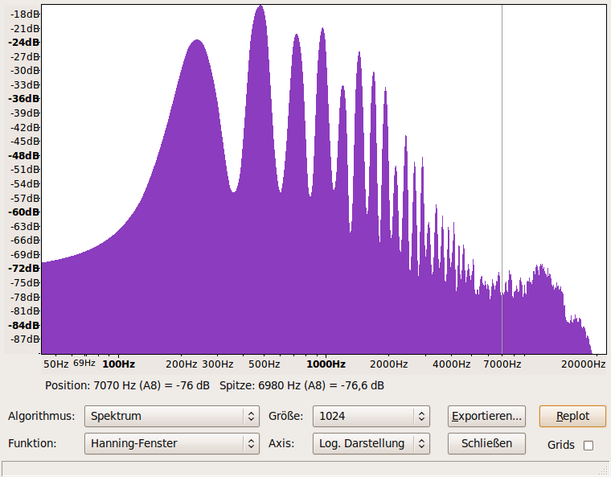

Зміст
Му́зика

Му́зика (від грец. μουσική — мистецтво муз) — мистецтво організації музичних звуків, насамперед у часовій
(ритмічній), звуковисотній та тембровій шкалі. Музичним може бути практично будь-який звук з певними
акустичними характеристиками, які відповідають естетиці тієї чи іншої епохи, та може бути відтвореним.
Джерелами такого звуку можуть бути: людський голос, музичні інструменти, електричні
Синтезатори тощо.
Форма та зміст музики
Зміст музики складають художньо-інтонаційні образи, тобто відбиті в усвідомленому звучанні результати відображення, перетворення та естетичної оцінки об'єктивної реальності людиною[3]. Згідно з сучасними уявленнями, такі образи кодуються зберігаються на нейродинамічному рівні в головному мозку людини, щоправда, форми її кодування дещо відрізняються від невербальних інформаційних потоків. Більшою мірою сприйняття конкретних образів сигналів є функцією правої півкулі мозку, отже, вважається, що саме права півкуля більшою мірою відповідальна за музичну діяльність.[4]
Теоретичні основи
Теоретичні основи музики є предметом вивчення теоретичного музикознавства, що включає в себе елементарну теорію музики, гармонію, поліфонію, вчення про музичні форми, а також музичну акустику. Теоретичне музикознавство досліджує основні закономірності музики, що встановилися в процесі її історичного розвитку, композиційні засоби та прийоми.
Музичний звук
Основним елементом музичного мистецтва є музичний звук. Властивості звуку вивчає музична акустика та елементарна теорія музики. Суб'єктивні особливості сприйняття звуку людиною дозволяють виділити чотири основні властивості музичного звуку — звуковисотність, тембр, гучність та тривалість.
Звукова система стрій
Здебільшого, музична практика обмежена звуками з частотою їх основних тонів від 27 Гц до 4 кГц, що відповідає діапазону від ноти ля субконтроктави до ноти до 5-ї октави. Вся сукупність використовуваних звуків називається звуковою системою[7], а відношення між двома звуками цієї системи — музичним інтервалом
Співзвуччя гармонія
Переважна більшість сучасних музичних напрямків широко використовує одночасні звучання тонів, які називаються співзвуччями. Співзвуччя двох звуків називають музичним інтервалом, а з трьох більше звуків — акордом[7], закономірність же поєднання тонів у співзвуччі називається гармонією[8]. Термін «гармонія» може стосуватися як окремо взятого співзвуччя, так загальних закономірностей їх використання, властивих певному шару музики загалом, гармонією називається також галузь музикознавства, що вивчає ці закономірності.